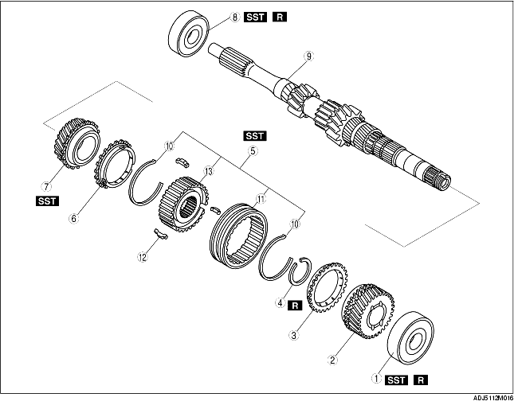
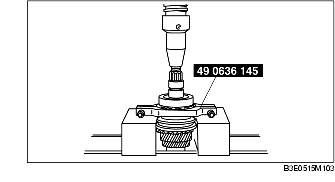
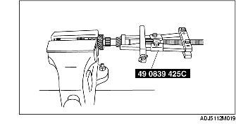

Primary shaft components disassembly
B3E051517201102
1. Disassemble in the order indicated in the table.

Bearing (4th Gear End) Disassembly Note
1. Remove the bearing using the SST.

3rd/4th Clutch Hub Component, 3rd Synchronizer Ring and 3rd Gear Disassembly Note
1. Remove the retaining ring.
2. Remove the 3rd/4th clutch hub component, 3rd synchronizer ring, and 3rd gear using the SST.

Bearing (Primary Shaft End) Disassembly Note
1. Remove the bearing using the SST.
